Mit Hilfe des Menüpunkts "Inventur EXIM", welcher über…
1 WinLine FAKT
1 Erfassen
1 Inventur
1 Inventur EXIM
… aufgerufen wird, können die zu erfassenden Inventurmengen ex- bzw. importiert werden.
Hinweis - Export
Bei einem Export werden die Artikelzeilen immer mit der Inventurerfassungsmenge 0 exportiert.
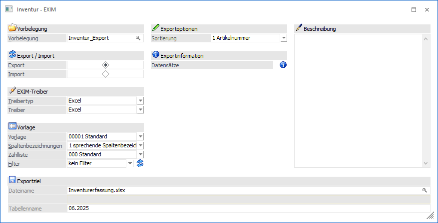
Vorbelegung
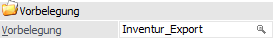
Ø Vorbelegung
Über die Vorbelegung können die Einstellungen eines Ex- bzw. Importvorgangs gespeichert werden. Wurde bereits eine Vorbelegung definiert, kann diese durch Drücken der F9-Taste gesucht werden. Wurde noch keine Vorbelegung definiert, kann diese durch eine Eingabe im Feld "Vorbelegung" angelegt werden. Wurden alle Eingaben durchgeführt, wird die Vorbelegung durch Drücken der F5-Taste bzw. des Buttons "Ok" gespeichert.
Hinweis
Wird mit einer bestehenden Vorbelegung gearbeitet und der Ex- bzw. Import mit Hilfe der Taste F5 bzw. des Buttons "Ok" gestartet, erfolgt eine Sicherheitsabfrage, ob mögliche Änderungen der Einstellungen in der Vorbelegung gespeichert werden sollen.
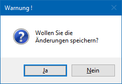
Export/Import
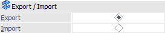
Ø Export / Import
Hier wird entschieden, ob Daten importiert oder exportiert werden sollen.
Treiber

Ø Treibertyp
Aus der Auswahlliste muss ausgewählt werden, mit welchem Treibertyp der Ex-/Import durchgeführt werden soll. Hierbei stehen folgende Varianten zur Verfügung:
ü Excel
Der Ex-/Import erfolgt
über eine Excel-Datei.
ü XML
Der Ex-/Import erfolgt über
eine XML-Datei.
ü ODBC-Treiber
Der Ex-/Import
erfolgt über einen ODBC-Treiber.
Ø Treiber
Abhängig vom Treibertyp muss hier der gewünschte Treiber gewählt werden:
ü Excel
Es steht nur der Treiber
"Excel" zur Verfügung. Hierbei handelt es sich um eine von mesonic zur Verfügung
gestellten Treibervariante.
ü XML
Bei der Ausgabe nach XML
stehen die Treiber "XML (Webservice)" und "XML (Export)" zur Verfügung. Der
Unterschied besteht darin, dass beim "XML (Webservice)" die XML-Datei so erzeugt
wird, dass sie in weiterer Folge auch für das WinLine WebService verwendet
werden kann. Beim "XML (Export)" hingegen wird eine "normale" XML-Datei
erzeugt.
ü ODBC-Treiber
Bei Verwendung des
Treibertyps "ODBC-Treiber" muss an dieser Stelle die Auswahl des ODBC-Treibers
erfolgen. Dieser hat eine direkte Auswirkung auf die möglichen Eingabefelder des
Bereichs "Exportziel / Datenquelle".
Achtung
Die angebotenen ODBC-Treiber sind abhängig von der Installation des PCs , wobei alle vorhandenen 32-Bit ODBC-Treiber zur Verfügung stehen (mesonic ist für die Funktionsfähigkeit bzw. das Vorhandensein der Treiber nicht verantwortlich).
Hinweis
Je nachdem, welche ODBC-Treiber
verwendet werden bzw. welche ODBC-Treiber-Version verwendet wird, kann es zu
ungewünschten Verhalten des Exports bzw. Imports kommen, wenn Sonderzeichen im
Verzeichnisnamen oder im Datenbankname vorkommen. Aus diesem Grund wird, wenn
solche Sonderzeichen verwendet werden, eine entsprechende Hinweismeldung
ausgegeben:
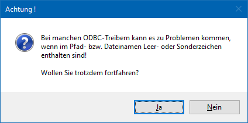
Achtung - Treiberauswahl
Um sicherzustellen, dass Notizfelder in voller Länge exportiert werden, sollte je nach verwendetem Treiber (Excel-, Access-, Text- oder SQL-Treiber) der (letzte) englische auswählbare Treiber aus der Auswahlliste verwendet werden. D.h. ist die Auswahlmöglichkeit an Treibern der Reihenfolge nach z.B. "02 - Microsoft Access Driver (*.mdb)", "10 - Microsoft Access Treiber (*.mdb)" und "16 - Driver do Microsoft Access (*.mdb)", dann sollte in diesem Fall "02 - Microsoft Access Driver (*.mdb)" selektiert werden (d.h. der englische). Andernfalls wird das Notizfeld in der Regel nur mit 255 Zeichen exportiert.
Achtung - Textdateien
Wenn ein Export von Textdateien ausgeführt wird, so wird eine SCHEMA.INI-Datei angelegt, welche die Dateibeschreibung der Exportdatei beinhaltet.
Wenn sich die Vorlage ändert, so hat dieses keine Auswirkung auf die bereits erzeugte SCHEMA.INI-Datei und es würde die Fehlermeldung "Die Tabellen existieren bereits und haben einen anderen Aufbau als die gewählte Vorlage!" ausgegeben werden. Damit der Export wieder "normal" durchgeführt werden kann, muss dieses Dokument entsprechend angepasst oder gelöscht (und damit beim nächsten Export neu angelegt) werden. Ebenso bedarf es, dass die vorhandenen Exportdateien gelöscht werden.
Vorlage
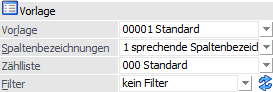
Ø Vorlage
An dieser Stelle wird die Vorlage hinterlegt, welche für den Export bzw. Import verwendet werden soll.
Hinweis
Mit Hilfe der Vorlage wird definiert, welche Felder exportiert bzw. importiert werden sollen. Zusätzlich können Vorbelegungen hinterlegt werden.
Ø Spaltenbezeichnungen
Hier kann ausgewählt werden, wie die Spaltenbezeichnungen behandelt werden sollen:
ü 0 - numerische
Spaltenbezeichnungen
Bei dieser Variante werden die Spalten nach den
Spaltenbezeichnungen gemäß Datenbank (z.B. C007) benannt.
Beispiel - numerische Spaltenbezeichnung
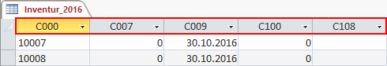
ü 1 - sprechende
Spaltenbezeichnungen
Bei dieser Variante erhalten die exportierten Spalten
den Namen des ursprünglichen Feldes.
Beispiel - sprechende Spaltenbezeichnung
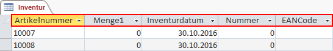
ü 2 - keine
Spaltenbezeichnungen
Bei dieser Variante, welche nur bei Verwendung des
Treibers "Excel" zur Verfügung steht, wird gar keine Spaltenüberschriftenzeile
exportiert.
Ø Zählliste
In diesem Feld kann definiert werden, ob und mit welcher Zählliste gearbeitet werden soll.
ü 00 - Standard
Der Export bzw.
Import wird ohne Zählliste durchgeführt. Für einen gezielten Export steht der
Filter (siehe Feld "Filter") zur Verfügung.
ü Ungleich "00 - Standard"
Der
Export bzw. Import wird mit einer Zählliste durchgeführt, welche zuvor in dem
Programm Definition - Zählliste
angelegt wurde.
Die Zählliste dient in weiterer Folge zur Selektion und
steuert diverse Prüfungsvorgaben des Imports (z.B. Inventurdatum).
Hinweis
Wird eine Zählliste ungleich "00 - Standard" ausgewählt, dann steht das Feld "Filter" nicht zur Verfügung. Zusätzlich werden bei einem Export jene Artikel und Lagerorte nicht berücksichtigt, für welche ungebuchte Inventurerfassungen vorliegen, die nicht der gewählten Zählliste entsprechen.
Ø Filter (nur bei Export)
Durch Auswahl eines Filters aus der Auswahlliste kann der Export bzw. Import auf bestimmte Artikel und / oder Lagerorte beschränkt werden (z.B. nur Artikel einer speziellen Artikelgruppe sollen exportiert werden).
Ø Filter bearbeiten (nur bei Export)
Mit Hilfe des Buttons "Filter bearbeiten" kann ein neuer Filter kreiert bzw. ein bestehender Filter bearbeiten werden.
Exportoptionen (nur bei Export)
Ø Sortierung
An dieser Stelle kann definiert werden, in welche Reihenfolge die Inventurdaten exportiert werden sollen. Folgende Möglichkeiten stehen zur Verfügung:
ü 1 - Artikelnummer
ü 2 - Artikelbezeichnung
ü 3 - Artikelgruppe
ü 4 - Lagerplatz
ü 5 - Artikeluntergruppe
Importoptionen (nur bei Import)
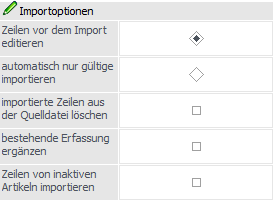
Ø Zeilen vor dem Import editieren
Wenn die Option "Zeilen vor dem Import editieren" aktiviert wurde, so wird vor dem eigentlichen Import automatisch in einen Prüfbereich (die sogenannte Importvorschau) gewechselt.
Ø automatisch nur gültige importieren
Mit Hilfe dieser Option wird der Import bei Anwahl des Buttons "Ok" sofort durchgeführt. Hierbei werden nur jene Erfassungszeilen berücksichtigt, welche als korrekt erkannt werden.
Ø importierte Zeilen aus der Quelldatei löschen
Durch Aktivierung dieser Option werden Inventurerfassungszeilen, welche aus externen Quellen in die WinLine importiert werden, nach erfolgtem Import aus der Datenquelle entfernt.
Hinweis
Für die Durchführung dieser Aktion muss das Feld "Zeilennummer" in der Vorlage vorhanden, sowie in der Quelldatei gefüllt sein.
Ø bestehende Erfassungen ergänzen
Wenn die Option "Bestehende Erfassungen ergänzen" aktiviert wurde, so werden ggfs. bereits bestehende Inventurerfassungen nicht überschrieben, sondern ergänzt.
Ø Zeilen von inaktiven Artikeln importieren
Durch Aktivierung dieser Option können Inventurerfassungen für inaktive Artikel importiert werden.
Hinweis
Die Option steht nicht zur Verfügung, wenn der Import für eine Zählliste durchgeführt wird (siehe Feld "Zählliste"). In diesem Fall bestimmt die Zählliste, ob Erfassungen für inaktive Artikel importiert werden dürfen.
Importoptionen - Lagerorte (nur bei Import)
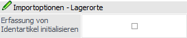
Ø Erfassungen von Identartikel initialisieren
Grundsätzlich kann die Menge eines Identartikels, unabhängig vom Lagerort, nur 1 betragen. Existiert nun bereits eine Erfassung von 1 auf einem x beliebigen Lagerort, so kann mit Hilfe dieser Option die Erfassung automatisch gelöscht werden.
Hinweis
Die Initialisierung wird nur durchgeführt, wenn eine Erfassung mit Menge 1 für einen Identartikel mit Lagerort importiert wird. Zusätzlich darf die Option "bestehende Erfassungen ergänzen" nicht aktiviert sein.
Datensatzinformation (nur bei Export)
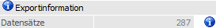
Ø Datensätze
An dieser Stelle wird die Anzahl zu exportierenden Zeilen (Artikel und Lagerorte) dargestellt.
Ø  Info
Info
Durch Anwahl des Buttons "Info" wird der aktuelle Datenstand kontrolliert und neben der Datensatzanzeige die Anzahl der Artikel und Lagerorte dargestellt.
Beschreibung
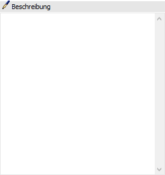
Ø Beschreibung
Wenn eine Vorbelegung verwendet wird, dann kann in diesem Feld eine genaue Beschreibung des Vorgangs hinterlegt werden. Diese Information kann in weiterer Folge auch im EXIM-Center eingesehen werden.
Exportziel / Datenquelle
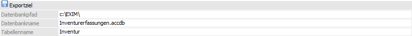
Ø Beschreibung von Datei bzw. Datenbank
In Abhängigkeit des gewählten Treibers werden in diesem Bereich Felder angezeigt, in denen Ziel (Bereich in den die Daten aus der WinLine kommend abgespeichert werden) bzw. Quelle (Bereich aus dem die Daten in die WinLine importiert werden) zu beschreiben sind.
Achtung - ODBC-Treiber
Der ODBC-Treiber kann zwar innerhalb von Access-Dateien und SQL-Datenbanken Tabellen erzeugen und diese Tabellen mit Datensätzen füllen, er kann aber nicht die Access-Datei bzw. die Datenbank selbst erstellen. Diese muss bereits vorhanden sein.
Buttons
Ø Ok
Durch Anwahl des Buttons "Ok" bzw. der Taste F5 wird der Export bzw. Import durchgeführt.
Hinweis zum Import
Wurde die Option "Zeilen vor dem Import editieren" aktiviert, so wird zunächst automatisch in einen Prüfbereich gewechselt, in welchem die Inventurerfassungszeilen in Form einer Tabelle dargestellt werden.
Ø Import (nur bei Import)
Mit Hilfe des Buttons "Import" im Prüfbereich (siehe Option "Zeilen vor dem Import editieren" bzw. Button "Ok") wird der Import durchgeführt.
Ø Ende
Durch Drücken des Buttons "Ende" bzw. der Taste ESC wird das Fenster geschlossen und alle Einstellungen verworfen.
Ø Eingaben initialisieren
Durch Anklicken dieses Buttons werden alle getätigten Einstellungen verworfen wodurch eine neue Selektion durchgeführt werden kann.
Hinweis
Wird mit einer Vorbelegung gearbeitet, dann kann diese direkt gelöscht werden.
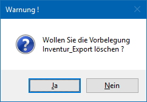
Ø Exportvorschau (nur bei Export)
Durch Drücken des Buttons "Exportvorschau" werden in einem neuen Fenster die Datensätze, die auf Grund der vorgenommenen Einstellungen exportiert werden würden, angezeigt.
Ø Zurück
Durch Anwahl des Buttons "Zurück" kann aus der Export- bzw. Importvorschau in das Hauptfenster zurückgewechselt werden.